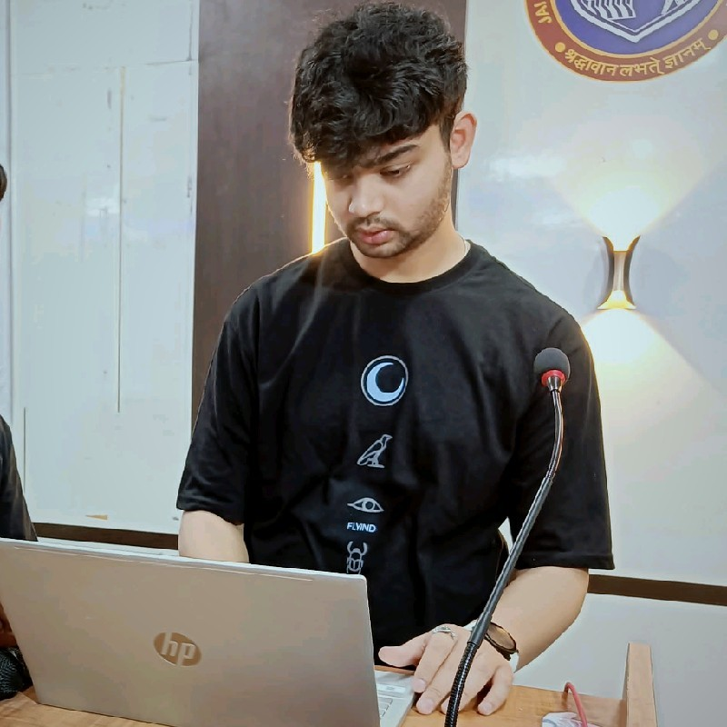
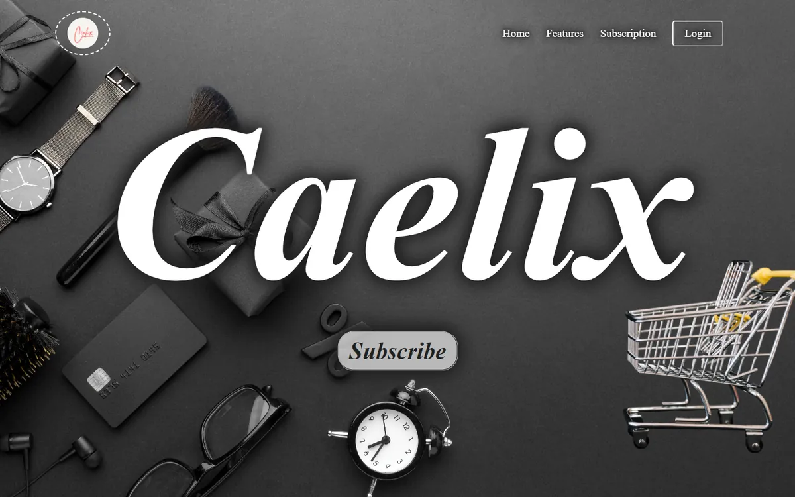
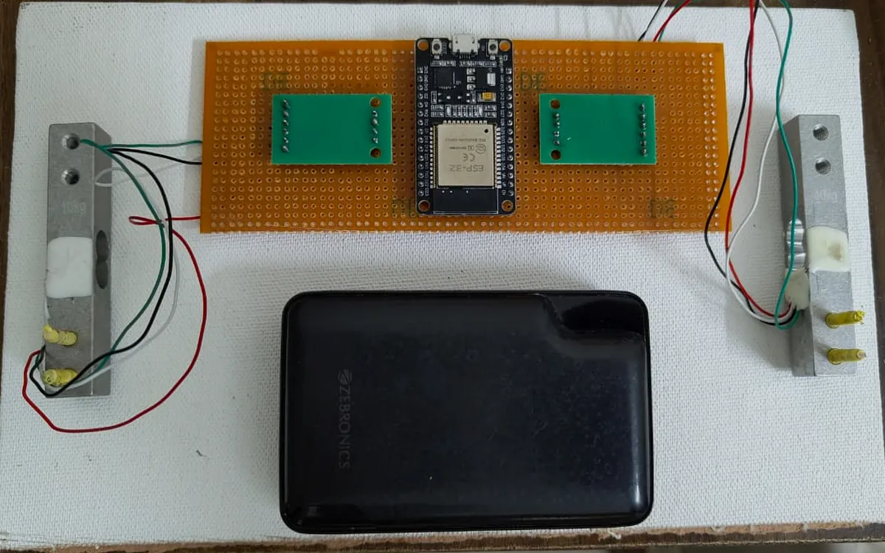
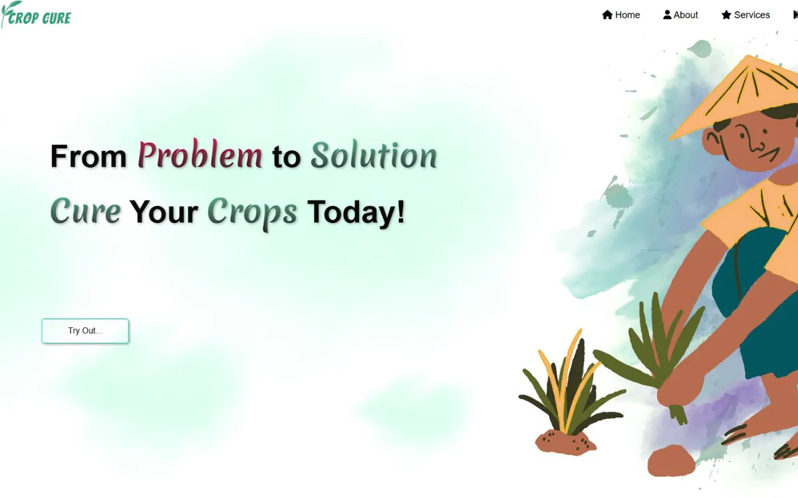
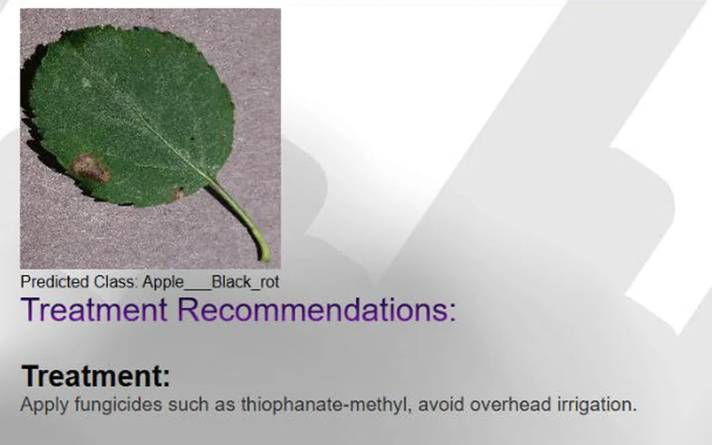
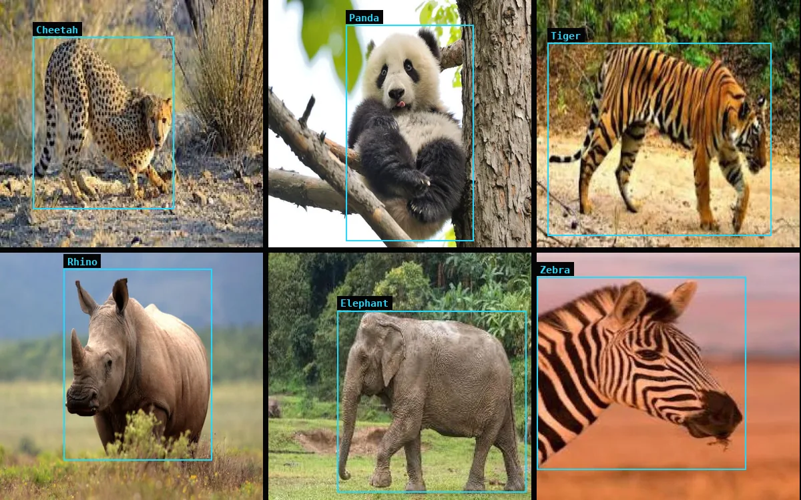

Aashman Singh Verma
アーシュマン・シン・ヴァルマ
I like finding out how things work
by building them: from PC hardware
to sensors to image models.
by building them: from PC hardware
to sensors to image models.
ABOUT ME

Hey, I'm Aashman.
Like a lot of people, I got into computers through games and stayed for the hardware. I still build and upgrade PCs and tune gaming setups in my spare time.
Most of what I know started the same way: something worked, I wanted to know why, and I opened it up to find out. Sometimes that's a graphics card, sometimes a few lines of firmware, sometimes a model that refuses to learn. I'm more interested in how the pieces fit together than in any one of them, and I'm still finding out which pieces I like best.
2022 – 2026
roy8q9t02A
roy8A8PpVC
roy8Q78ZiL
roy80gbn4Z
Machine Learning · Apr 2025
roy8qbFguy
roy8dGA2WS
roy8UkOOtf
Applied & Advanced · Dec 2025
roy8LxjpTo
roy8UIi63X
roy8iV0S9d
roy8UdMaYH
roy8Mbrb0r
B.Tech in Computer Science and Engineering
LNCT University, Bhopal · AI/ML specialisation
Graduated in 2026 with a CGPA of 7.75 / 10 (77.50%, First Division), and an SGPA of 8.56 and 8.33 across the final two semesters.
Core coursework
Analysis and Design of AlgorithmsOperating SystemsComputer NetworksDatabase Management SystemsComputer Organization and ArchitectureInternet of Things
AI/ML coursework with Samatrix.io
The AI/ML side of the degree was taught by practitioners from Samatrix.io, the university's industry partner, across 12 certified courses between February 2024 and December 2025.
Show all 12 courses
Foundations · Feb 2024Data Analysis Using Python
Statistics Using Python
R Programming for Data Science
Machine Learning & Pattern Recognition
Advance Machine Learning
Deep Learning
Deep Learning and Neural Network
Natural Language Processing
Data Science: Tools and Techniques
Data Visualization
DevOps
Awards
Certifications
1st
Mock-up Design Contest: First Place
First place at the National Science Day mock-up design contest, on the theme "Science and Innovation for Viksit Bharat". Our entry, Sign Setu, was a concept for recognising Indian Sign Language in real time, to help with the shortage of human interpreters.
Web Technology
4-credit course · 71% in a proctored examination · certified by IGNOU
Computer Vision
Internet of Things · Data Science · Cybersecurity
Three introductory courses
API Fundamentals Student Expert
Selected Work
Systems, not
Systems, not
notebooks.
01
CAELIX: Frictionless Checkout Smart Cart
Team of 3 · Abhishree Soni and Khanak Agrawal
A self-checkout shopping cart built to take the queue out of grocery shopping. Shoppers scan items on their phone as they go, and the cart checks every item three ways: the barcode that was scanned, the change in weight measured by load cells in the cart, and a camera running object detection. If the three disagree, the item is flagged to a store dashboard instead of slipping through. A QR code ties each cart to a shopper's session, and the dashboard shows live carts, stock levels and alerts. It started as an entry for Walmart Sparkathon 2025 and became a final-year project.


02
Crop Cure: Plant Disease Classification
Team of 4 · Anurag Kushwah, Parth Nagar and Yash Chaurasia
A web app that identifies plant diseases from a photo of a leaf. It recognises 38 classes of healthy and diseased leaves across crops such as apple, grape, potato and tomato, using a convolutional neural network trained from scratch on the PlantVillage dataset, and reached 94.74% accuracy on a held-out validation set of 10,861 images. For each diagnosis it also suggests a treatment. The model runs in the browser through TensorFlow.js. It began as a four-day build for Smart India Hackathon 2024.


03
Multi-Class Animal Detection
Team of 4 · Abhishree Soni, Khanak Agrawal and Parth Nagar
An object detector that finds and labels 20 species of animals in a photo, from cats and cows to cheetahs, pandas and zebras. It fine-tunes a pretrained YOLOv8 model on a 2,000-image dataset that the team collected and annotated by hand in Roboflow, 100 images per species, with augmentation such as flips, scaling and colour shifts to stretch a small dataset further. A Streamlit app serves as the demo.

Technical Skills
What I actually
What I actually
work with.
Machine learning
PythonTensorFlow / KerasCNN Training and EvaluationYOLOv8Roboflow
Embedded systems
ESP32HX711 and Load-Cell SensingSensor CalibrationEmbedded Firmware
Tools
GitGitHub
Languages
Hindi: NativeEnglish: C1 (IELTS Academic 7.0)
How I Work
Three things
Three things
I care about.
01
Get a rough version running
I'd rather have something rough working early than a perfect plan on paper. A version that runs is where the real problems show up, and it gives everyone on the team something concrete to react to.
02
Check what goes in first
Most problems I've run into weren't in the clever part. They were in what went into it: a sensor that drifts, or a label drawn a few pixels off. I've learned to spend the slow, careful time there before trusting anything that comes out.
03
Be clear about what a number means
A result is only useful if you know what it was measured on and what it wasn't. When I have one, I say where it came from; when I don't, I'd rather leave the space empty than fill it with a guess.
Get In Touch
Open to
Open to
what's next.
The form below is the quickest way to reach me.